August 2016
| We had so many hummingbirds coming to our
feeder that I decided to have a photo shoot to see if I
could catch their antics on film. It was a fun experiment
resulting in some interesting pictures. Hope you enjoy them! |
|
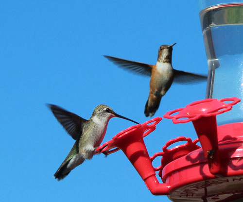 One trying to drink while another swoops in to crowd him out |
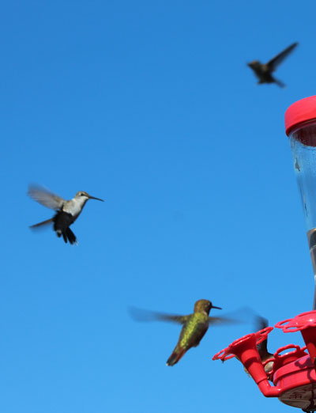 |
|
There are actually 4 birds in this shot, one is almost hidden by the feeder |
|
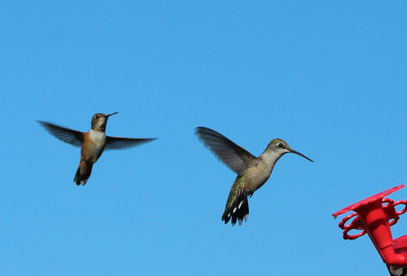 |
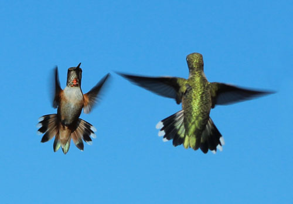 |
| Before this one can even start to drink, he is challenged by another | And the fight is on! It looks like they are dancing, doesn't it?! |
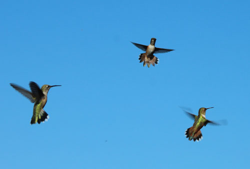 Once I got the idea that they were dancing in my head, I decided these
guys look like |
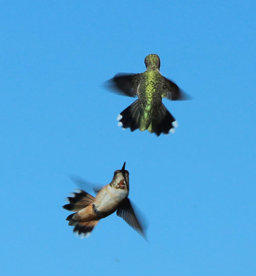 |
| How cool is this one? | |
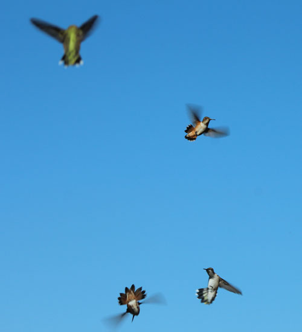 |
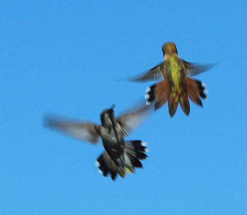 |
| No dancing here, this looks like a full-on battle scene worthy of an epic movie. | This one is blurry, but I included it because I liked the shadow of the beak on the left bird. |
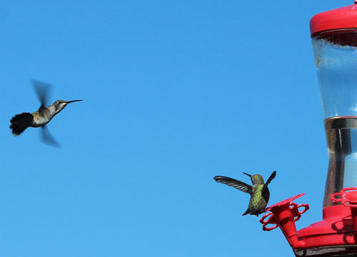 Incoming - alert, alert! |
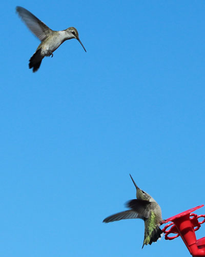 |
| "I thought I heard something up there!" | |
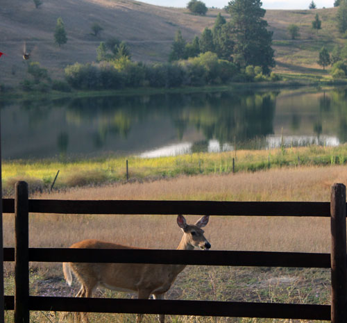 |
|
| In this shot, there's a hummingbird and a deer at once. The bird is in the upper left corner. | |